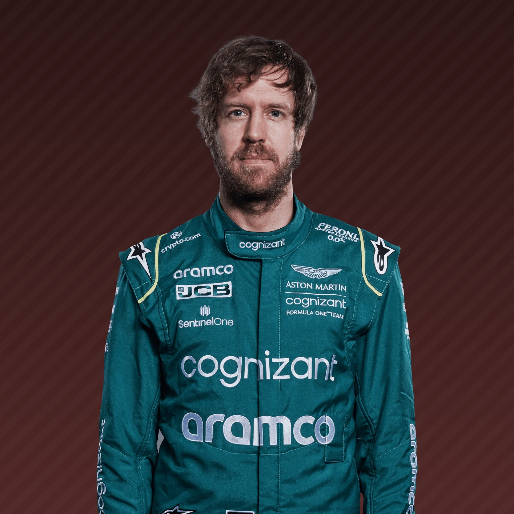
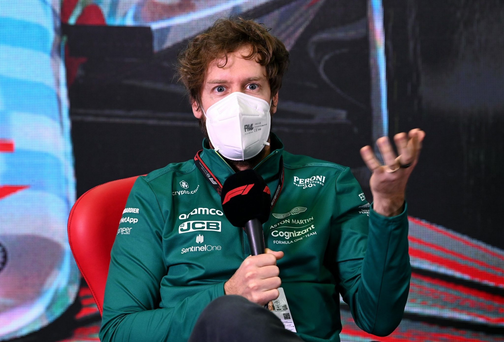
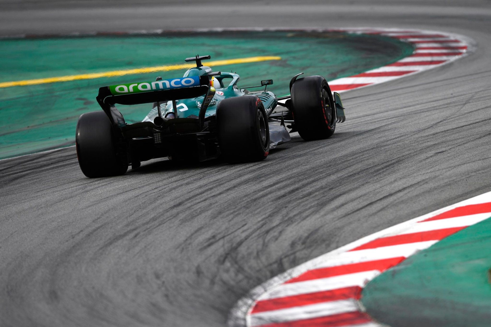
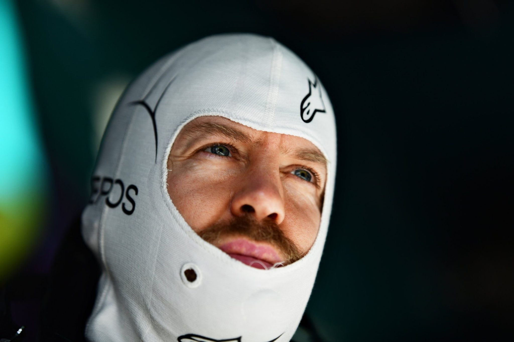

| Team |
Aston Martin |
| Country |
Germany |
| Podiums |
122 |
| Points |
3097 |
| Grand Prix entered |
298 |
| World Championships |
4 |
| Highest race finish |
1 (x53) |
| Highest grid position |
1 |
| Date of birth |
03/07/1987 |
| Place of birth |
Heppenheim, Germany |
Biography
Born and raised a Bull, then a Prancing Horse, and now the face of Aston Martin’s Formula 1 revival,
F1's poster boy of early achievement had won more than all but two drivers in history by the time he was just 26,
including back-to-back world titles between 2010 and 2013.
ettel’s trademark is pure pace – and of course his one-finger victory salute. In the chase to the chequered flag,
he likes to lead from the front and just like his hero, Michael Schumacher. But for all his competitive streak,
Vettel has a playful side too and has been known to let loose with a spot of Beatles karaoke - and baby can he drive a car.
Alongside his four world crowns he can boast more than 50 pole positions and race victories, ranking him
statistically - above many of the biggest names in F1 history.
No wonder then that he has twice been hand-picked to return some of Grand Prix oldest names to glory.
Following his move to Maranello, that mission didn’t exactly go to plan as Vettel’s rivalry with Lewis Hamilton intensified.
Then came an additional thorn in his side – young-gun Ferrari team mate Charles Leclerc,
the first man to outscore him over a season at the Scuderia.
His latest challenge is as Aston Martin’s team leader. He has already put them on the podium,
but Vettel will need to call on all his speed and experience if he’s to regularly reassert himself over his rivals
and re-establish his reputation as one of the sport’s all-time greats.
Gallery


